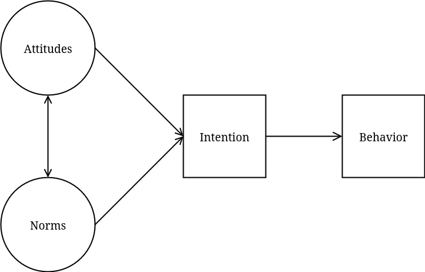
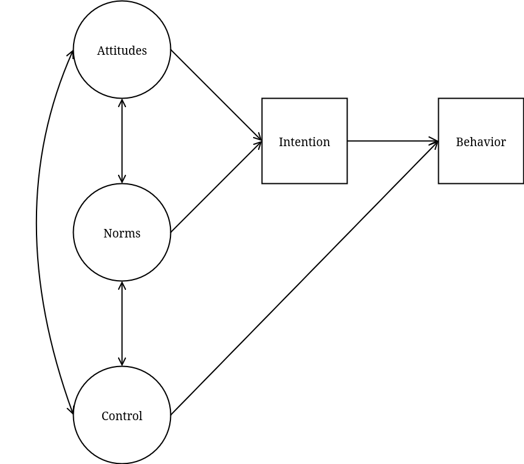

7.4 In-Class Exercises
In these exercises, you will use full structural equation modeling (SEM) to evaluate the Theory of Reasoned Action (TORA), which is a popular psychological theory of social behavior developed by Ajzen and Fishbein. The theory states that actual behavior is predicted by behavioral intention, which is in turn predicted by the attitude toward the behavior and subjective norms about the behavior. Later, a third determinant was added, perceived behavioral control. The extent to which people feel that they have control over their behavior also influences their behavior.
The data we will use for this practical are available in the toradata.csv file. These data were synthesized according to the results of Reinecke (1998)’s investigation of condom use by young people between 16 and 24 years old.
The data contain the following variables:
respnr: Numeric participant IDbehavior: The dependent variable condom use- Measured on a 5-point frequency scale (How often do you…)
intent: A single item assessing behavioral intention- Measured on a similar 5-point scale (In general, do you intend to…).
attit_1:attit_3: Three indicators of attitudes about condom use- Measured on a 5-point rating scale (e.g., using a condom is awkward)
norm_1:norm_3: Three indicators of social norms about condom use- Measured on a 5-point rating scale (e.g., I think most of my friends would use…)
control_1:control_3: Three indicators of perceived behavioral control- Measured on a 5-point rating scale (e.g., I know well how to use a condom)
sex: Binary factor indicating biological sex
7.4.1
Load the data contained in the toradata.csv file.
Click to show code
7.4.2
The data contain multiple indicators of attitudes, norms, and control. Run a CFA to test a three-factor measurement model for these three constructs.
- Covary all three latent factors.
- Set the scale with the marker-variable method of identification.
- Impose a simple structure with no cross loadings.
- Do not estimate any mean structure.
Use this CFA to evaluate the measurement model.
- Do the data support the measurement model for these latent factors?
- Are the three latent factors significantly correlated?
- Is it reasonable to proceed with our evaluation of the TORA theory?
Click to show code
library(lavaan)
mod_cfa <- '
attitudes =~ attit_1 + attit_2 + attit_3
norms =~ norm_1 + norm_2 + norm_3
control =~ control_1 + control_2 + control_3
'
cfa_out <- cfa(mod_cfa, data = condom)
summary(cfa_out, fit.measures = TRUE)## lavaan 0.7-2 ended normally after 29 iterations
##
## Estimator ML
## Optimization method NLMINB
## Number of model parameters 21
##
## Number of observations 250
##
## Model Test User Model:
##
## Test statistic 35.611
## Degrees of freedom 24
## P-value (Chi-square) 0.060
##
## Model Test Baseline Model:
##
## Test statistic 910.621
## Degrees of freedom 36
## P-value 0.000
##
## User Model versus Baseline Model:
##
## Comparative Fit Index (CFI) 0.987
## Tucker-Lewis Index (TLI) 0.980
##
## Loglikelihood and Information Criteria:
##
## Loglikelihood user model (H0) -2998.290
## Loglikelihood unrestricted model (H1) -2980.484
##
## Akaike (AIC) 6038.580
## Bayesian (BIC) 6112.530
## Sample-size adjusted Bayesian (SABIC) 6045.959
##
## Root Mean Square Error of Approximation:
##
## RMSEA 0.044
## 90 Percent confidence interval - lower 0.000
## 90 Percent confidence interval - upper 0.073
## P-value H_0: RMSEA <= 0.050 0.599
## P-value H_0: RMSEA >= 0.080 0.017
##
## Standardized Root Mean Square Residual:
##
## SRMR 0.037
##
## Goodness of Fit Index:
##
## Goodness of Fit Index (GFI) 0.988
## 90 Percent confidence interval - lower 0.971
## 90 Percent confidence interval - upper 0.999
##
## Parameter Estimates:
##
## Standard errors Standard
## Information Expected
## Information saturated (h1) model Structured
##
## Latent Variables:
## Estimate Std.Err z-value P(>|z|)
## attitudes =~
## attit_1 1.000
## attit_2 1.036 0.068 15.308 0.000
## attit_3 -1.002 0.067 -14.856 0.000
## norms =~
## norm_1 1.000
## norm_2 1.031 0.098 10.574 0.000
## norm_3 0.932 0.093 10.013 0.000
## control =~
## control_1 1.000
## control_2 0.862 0.129 6.699 0.000
## control_3 0.968 0.133 7.290 0.000
##
## Covariances:
## Estimate Std.Err z-value P(>|z|)
## attitudes ~~
## norms 0.340 0.069 4.957 0.000
## control 0.475 0.073 6.468 0.000
## norms ~~
## control 0.338 0.064 5.254 0.000
##
## Variances:
## Estimate Std.Err z-value P(>|z|)
## .attit_1 0.418 0.052 8.047 0.000
## .attit_2 0.310 0.047 6.633 0.000
## .attit_3 0.369 0.049 7.577 0.000
## .norm_1 0.504 0.071 7.130 0.000
## .norm_2 0.469 0.071 6.591 0.000
## .norm_3 0.635 0.075 8.465 0.000
## .control_1 0.614 0.078 7.905 0.000
## .control_2 0.865 0.091 9.520 0.000
## .control_3 0.762 0.087 8.758 0.000
## attitudes 0.885 0.116 7.620 0.000
## norms 0.743 0.116 6.423 0.000
## control 0.497 0.099 5.002 0.000Click for explanation
- Yes, the model fits the data well, and the measurement parameters (e.g., factor loadings, residual variances) look reasonable. So, the data seem to support this measurement structure.
- Yes, all three latent variables are significantly, positively correlated.
- Yes.
- The measurement structure is supported, so we can use the latent variables to represent the respective constructs in our subsequent SEM.
- The TORA doesn’t actually say anything about the associations between these three factors, but it makes sense that they would be positively associated. So, we should find this result comforting.
The basic TORA model implies the following structural relations.
- intention predicts behavior
- attitudes and norms predict intention
- attitudes and norms covary
We’ll use observed scores to quantify behavior (\(Y_{behave}\)) and intention (\(Y_{intent}\)) while we have latent factors to represent attitudes (\(\eta_{attitudes}\)) and norms (\(\eta_{norms}\)). Thus, we can represent the TORA model via the following equations.
\[ \begin{align*} Y_{behave} &= \beta_{11} Y_{intent}\\[8pt] Y_{intent} &= \beta_{21} \eta_{attitudes} + \beta_{22} \eta_{norms}\\[8pt] \begin{bmatrix} Y_{behave}\\ Y_{intent}\\ \eta_{attitudes}\\ \eta_{norms} \end{bmatrix} &\sim N \left( \begin{bmatrix} 0\\ 0\\ 0\\ 0 \end{bmatrix}, \begin{bmatrix} \psi_{11} & & & \\ 0 & \psi_{22} & & \\ 0 & 0 & \psi_{33} & \\ 0 & 0 & \psi_{43} & \psi_{44} \end{bmatrix} \right) \end{align*} \]
The first two equations describe the latent regression structure. The third line shows the latent covariance structure in terms of the multivariate normal distribution that we assume for the focal variables.
7.4.3
Draw a path diagram representing the structural part of our TORA model.
- Do not diagram the measurement model.
- I.e., don’t include the observed indicators, factor loadings, or residual factors/variances.
- Draw the diagram by hand, on paper.
Click for explanation
If you don’t explicitly diagram the variances, your diagram should look something like the following.

7.4.4
Estimate the basic TORA model as an SEM, and use the result to evaluate the TORA.
- Does the model fit well?
- Do the estimates align with the TORA?
- How much variance in intention and behavior are explained by the model?
Click to show code
mod_tora1 <- '
## Define the latent variables:
attitudes =~ attit_1 + attit_2 + attit_3
norms =~ norm_1 + norm_2 + norm_3
## Define the structural model:
behavior ~ intent
intent ~ attitudes + norms
'
out_tora1 <- sem(mod_tora1, data = condom)
summary(out_tora1, fit.measures = TRUE, rsquare = TRUE)## lavaan 0.7-2 ended normally after 24 iterations
##
## Estimator ML
## Optimization method NLMINB
## Number of model parameters 18
##
## Number of observations 250
##
## Model Test User Model:
##
## Test statistic 27.890
## Degrees of freedom 18
## P-value (Chi-square) 0.064
##
## Model Test Baseline Model:
##
## Test statistic 1089.407
## Degrees of freedom 28
## P-value 0.000
##
## User Model versus Baseline Model:
##
## Comparative Fit Index (CFI) 0.991
## Tucker-Lewis Index (TLI) 0.986
##
## Loglikelihood and Information Criteria:
##
## Loglikelihood user model (H0) -2533.616
## Loglikelihood unrestricted model (H1) -2519.671
##
## Akaike (AIC) 5103.232
## Bayesian (BIC) 5166.618
## Sample-size adjusted Bayesian (SABIC) 5109.557
##
## Root Mean Square Error of Approximation:
##
## RMSEA 0.047
## 90 Percent confidence interval - lower 0.000
## 90 Percent confidence interval - upper 0.079
## P-value H_0: RMSEA <= 0.050 0.523
## P-value H_0: RMSEA >= 0.080 0.046
##
## Standardized Root Mean Square Residual:
##
## SRMR 0.036
##
## Goodness of Fit Index:
##
## Goodness of Fit Index (GFI) 0.991
## 90 Percent confidence interval - lower 0.973
## 90 Percent confidence interval - upper 1.000
##
## Parameter Estimates:
##
## Standard errors Standard
## Information Expected
## Information saturated (h1) model Structured
##
## Latent Variables:
## Estimate Std.Err z-value P(>|z|)
## attitudes =~
## attit_1 1.000
## attit_2 1.039 0.068 15.365 0.000
## attit_3 -1.002 0.067 -14.850 0.000
## norms =~
## norm_1 1.000
## norm_2 0.983 0.087 11.333 0.000
## norm_3 0.935 0.087 10.778 0.000
##
## Regressions:
## Estimate Std.Err z-value P(>|z|)
## behavior ~
## intent 0.746 0.045 16.443 0.000
## intent ~
## attitudes 0.439 0.063 6.990 0.000
## norms 0.693 0.077 8.977 0.000
##
## Covariances:
## Estimate Std.Err z-value P(>|z|)
## attitudes ~~
## norms 0.347 0.069 5.027 0.000
##
## Variances:
## Estimate Std.Err z-value P(>|z|)
## .attit_1 0.420 0.052 8.103 0.000
## .attit_2 0.306 0.046 6.604 0.000
## .attit_3 0.372 0.049 7.651 0.000
## .norm_1 0.483 0.064 7.581 0.000
## .norm_2 0.521 0.065 7.954 0.000
## .norm_3 0.610 0.070 8.713 0.000
## .behavior 0.603 0.054 11.180 0.000
## .intent 0.423 0.048 8.769 0.000
## attitudes 0.884 0.116 7.614 0.000
## norms 0.765 0.113 6.767 0.000
##
## R-Square:
## Estimate
## attit_1 0.678
## attit_2 0.757
## attit_3 0.705
## norm_1 0.613
## norm_2 0.587
## norm_3 0.523
## behavior 0.520
## intent 0.639Click for explanation
Yes, the model still fits the data very well.
Yes, the estimates all align with the TORA. Specifically, attitudes and norms both significantly predict intention, and intention significantly predicts condom use.
The model explains 63.93% of the variance in intention and 51.96% of the variance in behavior.
Now, we’ll update the model to represent the extended TORA model that includes perceived behavioral control. Modify the basic TORA model from 7.4.4 as follows.
- Add control as a second predictor of behavior
- Allow all three exogenous latent factors covary
We can represent the extended TORA model via the following equations.
\[ \begin{align*} Y_{behave} &= \beta_{11} Y_{intent} + \beta_{12} \eta_{control}\\[8pt] Y_{intent} &= \beta_{21} \eta_{attitudes} + \beta_{22} \eta_{norms}\\[8pt] \begin{bmatrix} Y_{behavior}\\ Y_{inent}\\ \eta_{attitudes}\\ \eta_{norms}\\ \eta_{control} \end{bmatrix} &\sim N \left( \begin{bmatrix} 0\\ 0\\ 0\\ 0\\ 0 \end{bmatrix}, \begin{bmatrix} \psi_{11} & & & & \\ 0 & \psi_{22} & & & \\ 0 & 0 & \psi_{33} & & \\ 0 & 0 & \psi_{43} & \psi_{44} & \\ 0 & 0 & \psi_{53} & \psi_{54} & \psi_{55} \end{bmatrix} \right) \end{align*} \]
7.4.5
Draw a path diagram representing the structural part of our extended TORA model.
- Do not diagram the measurement model.
- I.e., don’t include the observed indicators, factor loadings, or residual factors/variances.
- Draw the diagram by hand, on paper.
Click for explanation
If you don’t explicitly diagram the variances, your diagram should look something like the following.

7.4.6
Estimate the extended TORA model described above.
- Does the model fit well?
- Do the estimates align with the extended TORA?
- How much variance in intention and behavior are explained by the model?
Click to show code
mod_tora2 <- '
attitudes =~ attit_1 + attit_2 + attit_3
norms =~ norm_1 + norm_2 + norm_3
control =~ control_1 + control_2 + control_3
behavior ~ intent + control
intent ~ attitudes + norms
'
out_tora2 <- sem(mod_tora2, data = condom)
summary(out_tora2, fit.measures = TRUE, rsquare = TRUE)## lavaan 0.7-2 ended normally after 31 iterations
##
## Estimator ML
## Optimization method NLMINB
## Number of model parameters 27
##
## Number of observations 250
##
## Model Test User Model:
##
## Test statistic 48.757
## Degrees of freedom 39
## P-value (Chi-square) 0.136
##
## Model Test Baseline Model:
##
## Test statistic 1333.695
## Degrees of freedom 55
## P-value 0.000
##
## User Model versus Baseline Model:
##
## Comparative Fit Index (CFI) 0.992
## Tucker-Lewis Index (TLI) 0.989
##
## Loglikelihood and Information Criteria:
##
## Loglikelihood user model (H0) -3551.160
## Loglikelihood unrestricted model (H1) -3526.782
##
## Akaike (AIC) 7156.320
## Bayesian (BIC) 7251.400
## Sample-size adjusted Bayesian (SABIC) 7165.807
##
## Root Mean Square Error of Approximation:
##
## RMSEA 0.032
## 90 Percent confidence interval - lower 0.000
## 90 Percent confidence interval - upper 0.057
## P-value H_0: RMSEA <= 0.050 0.870
## P-value H_0: RMSEA >= 0.080 0.000
##
## Standardized Root Mean Square Residual:
##
## SRMR 0.033
##
## Goodness of Fit Index:
##
## Goodness of Fit Index (GFI) 0.991
## 90 Percent confidence interval - lower 0.975
## 90 Percent confidence interval - upper 1.000
##
## Parameter Estimates:
##
## Standard errors Standard
## Information Expected
## Information saturated (h1) model Structured
##
## Latent Variables:
## Estimate Std.Err z-value P(>|z|)
## attitudes =~
## attit_1 1.000
## attit_2 1.033 0.068 15.221 0.000
## attit_3 -1.025 0.068 -15.097 0.000
## norms =~
## norm_1 1.000
## norm_2 0.984 0.087 11.256 0.000
## norm_3 0.955 0.088 10.881 0.000
## control =~
## control_1 1.000
## control_2 0.859 0.127 6.789 0.000
## control_3 0.997 0.131 7.609 0.000
##
## Regressions:
## Estimate Std.Err z-value P(>|z|)
## behavior ~
## intent 0.563 0.063 8.923 0.000
## control 0.454 0.119 3.805 0.000
## intent ~
## attitudes 0.447 0.063 7.100 0.000
## norms 0.706 0.078 9.078 0.000
##
## Covariances:
## Estimate Std.Err z-value P(>|z|)
## attitudes ~~
## norms 0.342 0.068 5.011 0.000
## control 0.474 0.072 6.548 0.000
## norms ~~
## control 0.352 0.064 5.521 0.000
##
## Variances:
## Estimate Std.Err z-value P(>|z|)
## .attit_1 0.432 0.052 8.381 0.000
## .attit_2 0.330 0.046 7.220 0.000
## .attit_3 0.344 0.046 7.439 0.000
## .norm_1 0.496 0.063 7.820 0.000
## .norm_2 0.533 0.065 8.152 0.000
## .norm_3 0.595 0.069 8.643 0.000
## .control_1 0.625 0.075 8.372 0.000
## .control_2 0.876 0.090 9.757 0.000
## .control_3 0.746 0.084 8.874 0.000
## .behavior 0.542 0.052 10.423 0.000
## .intent 0.409 0.047 8.769 0.000
## attitudes 0.872 0.115 7.566 0.000
## norms 0.751 0.112 6.709 0.000
## control 0.485 0.096 5.059 0.000
##
## R-Square:
## Estimate
## attit_1 0.668
## attit_2 0.738
## attit_3 0.727
## norm_1 0.602
## norm_2 0.577
## norm_3 0.535
## control_1 0.437
## control_2 0.290
## control_3 0.392
## behavior 0.566
## intent 0.651Click for explanation
Yes, the model still fits the data very well.
Yes, the estimates all align with the updated TORA. Specifically, attitudes and norms both significantly predict intention, while intention and control both significantly predict behavior.
The model explains 65.11% of the variance in intention and 56.62% of the variance in behavior.
The TORA model explicitly forbids direct paths from attitudes and norms to behavior: these effects should be fully mediated by the intention. The theory does not specify how control should affect behavior. There may be a direct effect of control on behavior, or the effect may be (partially) mediated by intention.
7.4.7
Use the extended TORA model to evaluate the hypothesized indirect effects of attitudes and norms.
- Does intention significantly mediate the effects of attitudes and norms on behavior?
- Are both of the above effects completely mediated?
- Do these results comport with the TORA? Why or why not?
Click for explanation
mod_ie <- '
attitudes =~ attit_1 + attit_2 + attit_3
norms =~ norm_1 + norm_2 + norm_3
control =~ control_1 + control_2 + control_3
behavior ~ b*intent + control + attitudes + norms
intent ~ a1*attitudes + a2*norms
ie_att := a1 * b
ie_norm := a2 * b
'
set.seed(235711)
out_ie <- sem(mod_ie, data = condom, se = "bootstrap", bootstrap = 1000)
summary(out_ie, ci = TRUE)## lavaan 0.7-2 ended normally after 36 iterations
##
## Estimator ML
## Optimization method NLMINB
## Number of model parameters 29
##
## Number of observations 250
##
## Model Test User Model:
##
## Test statistic 48.629
## Degrees of freedom 37
## P-value (Chi-square) 0.096
##
## Parameter Estimates:
##
## Standard errors Bootstrap
## Number of requested bootstrap draws 1000
## Number of successful bootstrap draws 1000
##
## Latent Variables:
## Estimate Std.Err z-value P(>|z|) ci.lower ci.upper
## attitudes =~
## attit_1 1.000 1.000 1.000
## attit_2 1.033 0.060 17.261 0.000 0.925 1.165
## attit_3 -1.025 0.064 -15.894 0.000 -1.163 -0.902
## norms =~
## norm_1 1.000 1.000 1.000
## norm_2 0.984 0.071 13.794 0.000 0.843 1.127
## norm_3 0.955 0.093 10.324 0.000 0.792 1.157
## control =~
## control_1 1.000 1.000 1.000
## control_2 0.860 0.113 7.624 0.000 0.653 1.098
## control_3 0.996 0.147 6.790 0.000 0.748 1.320
##
## Regressions:
## Estimate Std.Err z-value P(>|z|) ci.lower ci.upper
## behavior ~
## intent (b) 0.545 0.075 7.282 0.000 0.389 0.686
## control 0.428 0.232 1.847 0.065 0.046 0.934
## attitudes 0.010 0.122 0.084 0.933 -0.249 0.226
## norms 0.041 0.118 0.345 0.730 -0.194 0.266
## intent ~
## attitudes (a1) 0.447 0.067 6.674 0.000 0.324 0.585
## norms (a2) 0.706 0.078 9.094 0.000 0.569 0.878
##
## Covariances:
## Estimate Std.Err z-value P(>|z|) ci.lower ci.upper
## attitudes ~~
## norms 0.342 0.070 4.883 0.000 0.208 0.480
## control 0.475 0.069 6.850 0.000 0.344 0.612
## norms ~~
## control 0.350 0.067 5.218 0.000 0.221 0.484
##
## Variances:
## Estimate Std.Err z-value P(>|z|) ci.lower ci.upper
## .attit_1 0.432 0.050 8.720 0.000 0.331 0.526
## .attit_2 0.330 0.045 7.382 0.000 0.238 0.415
## .attit_3 0.343 0.049 6.992 0.000 0.244 0.444
## .norm_1 0.496 0.060 8.305 0.000 0.376 0.614
## .norm_2 0.533 0.077 6.951 0.000 0.390 0.687
## .norm_3 0.594 0.069 8.597 0.000 0.443 0.719
## .control_1 0.624 0.076 8.216 0.000 0.477 0.763
## .control_2 0.875 0.092 9.495 0.000 0.686 1.052
## .control_3 0.745 0.079 9.398 0.000 0.574 0.889
## .behavior 0.544 0.058 9.379 0.000 0.415 0.639
## .intent 0.409 0.050 8.169 0.000 0.309 0.507
## attitudes 0.872 0.104 8.387 0.000 0.675 1.077
## norms 0.751 0.099 7.557 0.000 0.556 0.941
## control 0.486 0.096 5.042 0.000 0.303 0.684
##
## Defined Parameters:
## Estimate Std.Err z-value P(>|z|) ci.lower ci.upper
## ie_att 0.244 0.050 4.863 0.000 0.150 0.352
## ie_norm 0.385 0.066 5.838 0.000 0.268 0.527- Yes, both indirect effects are significant according to the 95% bootstrapped CIs.
- Yes, both effects are completely mediated by intention. We can infer as much because the direct effects of attitudes and norms on behavior are both nonsignificant.
- Yes, these results comport with the TORA. Both effects are fully mediated, as the theory stipulates.
In addition to evaluating the significance of the indirect and direct effects, we can also take a model-comparison perspective. We can use model comparisons to test if removing the direct effects of attitudes and norms on behavior significantly decreases model fit. In other words, are those paths needed to accurately represent the data, or are they “dead weight”.
Use the extended TORA model to answer the remaining questions.
7.4.8
Use a \(\Delta \chi^2\) test to evaluate the necessity of including the direct effects of attitudes and norms on behavior in the model.
- What is your conclusion?
Click for explanation
We only need to compare the fit of the model with the direct effects included to the fit of the model without the direct
effects. We’ve already estimated both models, so we can simply submit the fitted lavaan objects to the anova()
function.
##
## Chi-Squared Difference Test
##
## Df AIC BIC Chisq Chisq diff RMSEA Df diff Pr(>Chisq)
## out_tora1 18 5103.2 5166.6 27.890
## out_tora2 39 7156.3 7251.4 48.757 20.867 0 21 0.4671The \(\Delta \chi^2\) test is not significant. So, we have not lost a significant amount of fit by fixing the direct effects to zero. In other words, the complete mediation model explains the data just as well as the partial mediation model. So, we should probably prefer the more parsimonious model.
7.4.9
Use some statistical means of evaluating the most plausible way to include control into the model.
- Choose between the following three options:
- control predicts behavior via a direct, un-mediated effect.
- control predicts behavior via an indirect effect that is completely mediated by intention.
- control predicts behavior via both an indirect effect through intention and a residual direct effect.
Hint: There is more than one way to approach this problem.
Approach 1: Testing Effects
Click to show code
One way to tackle this problem is to test the indirect, direct, and total effects.
## Allow for partial mediation:
mod1 <- '
attitudes =~ attit_1 + attit_2 + attit_3
norms =~ norm_1 + norm_2 + norm_3
control =~ control_1 + control_2 + control_3
behavior ~ b*intent + c*control
intent ~ attitudes + norms + a*control
ie := a * b
total := ie + c
'
set.seed(235711)
out1 <- sem(mod1, data = condom, se = "bootstrap", bootstrap = 1000)
summary(out1, ci = TRUE)## lavaan 0.7-2 ended normally after 33 iterations
##
## Estimator ML
## Optimization method NLMINB
## Number of model parameters 28
##
## Number of observations 250
##
## Model Test User Model:
##
## Test statistic 47.389
## Degrees of freedom 38
## P-value (Chi-square) 0.141
##
## Parameter Estimates:
##
## Standard errors Bootstrap
## Number of requested bootstrap draws 1000
## Number of successful bootstrap draws 1000
##
## Latent Variables:
## Estimate Std.Err z-value P(>|z|) ci.lower ci.upper
## attitudes =~
## attit_1 1.000 1.000 1.000
## attit_2 1.034 0.060 17.222 0.000 0.925 1.167
## attit_3 -1.021 0.064 -15.877 0.000 -1.158 -0.898
## norms =~
## norm_1 1.000 1.000 1.000
## norm_2 0.985 0.071 13.803 0.000 0.848 1.133
## norm_3 0.948 0.093 10.204 0.000 0.786 1.155
## control =~
## control_1 1.000 1.000 1.000
## control_2 0.861 0.113 7.635 0.000 0.653 1.100
## control_3 0.996 0.142 7.020 0.000 0.760 1.318
##
## Regressions:
## Estimate Std.Err z-value P(>|z|) ci.lower ci.upper
## behavior ~
## intent (b) 0.551 0.074 7.487 0.000 0.391 0.683
## control (c) 0.469 0.142 3.298 0.001 0.231 0.791
## intent ~
## attitudes 0.357 0.115 3.113 0.002 0.146 0.603
## norms 0.646 0.095 6.794 0.000 0.473 0.859
## control (a) 0.199 0.199 1.002 0.317 -0.188 0.633
##
## Covariances:
## Estimate Std.Err z-value P(>|z|) ci.lower ci.upper
## attitudes ~~
## norms 0.344 0.070 4.905 0.000 0.210 0.481
## control 0.471 0.069 6.838 0.000 0.342 0.608
## norms ~~
## control 0.345 0.066 5.240 0.000 0.215 0.481
##
## Variances:
## Estimate Std.Err z-value P(>|z|) ci.lower ci.upper
## .attit_1 0.429 0.050 8.628 0.000 0.329 0.524
## .attit_2 0.325 0.045 7.230 0.000 0.233 0.408
## .attit_3 0.347 0.049 7.011 0.000 0.248 0.455
## .norm_1 0.490 0.060 8.172 0.000 0.373 0.612
## .norm_2 0.525 0.076 6.869 0.000 0.385 0.684
## .norm_3 0.599 0.070 8.529 0.000 0.447 0.729
## .control_1 0.626 0.074 8.429 0.000 0.479 0.761
## .control_2 0.875 0.092 9.522 0.000 0.689 1.049
## .control_3 0.748 0.078 9.532 0.000 0.579 0.893
## .behavior 0.541 0.055 9.873 0.000 0.423 0.639
## .intent 0.412 0.050 8.283 0.000 0.307 0.504
## attitudes 0.875 0.104 8.385 0.000 0.676 1.081
## norms 0.757 0.099 7.616 0.000 0.560 0.949
## control 0.484 0.095 5.092 0.000 0.306 0.683
##
## Defined Parameters:
## Estimate Std.Err z-value P(>|z|) ci.lower ci.upper
## ie 0.110 0.105 1.049 0.294 -0.105 0.309
## total 0.578 0.186 3.109 0.002 0.235 0.971Click for explanation
From the above results, we can see that the direct and total effects are both significant, but the indirect effect is not. Hence, it probably makes the most sense to include control via a direct (non-mediated) effect on behavior.
Approach 2: Nested Model Comparison
Click to show code
We can also approach this problem from a model-comparison perspective. We can fit models that encode each pattern of constraints and check which one best represents the data.
- The extended TORA model from 7.4.6 already encodes the non-mediated direct effect.
## Force complete mediation:
mod2 <- '
attitudes =~ attit_1 + attit_2 + attit_3
norms =~ norm_1 + norm_2 + norm_3
control =~ control_1 + control_2 + control_3
behavior ~ intent
intent ~ attitudes + norms + control
'
## Estimate the two restricted models:
out2 <- sem(mod2, data = condom)
## Check the results:
summary(out2)## lavaan 0.7-2 ended normally after 33 iterations
##
## Estimator ML
## Optimization method NLMINB
## Number of model parameters 27
##
## Number of observations 250
##
## Model Test User Model:
##
## Test statistic 62.797
## Degrees of freedom 39
## P-value (Chi-square) 0.009
##
## Parameter Estimates:
##
## Standard errors Standard
## Information Expected
## Information saturated (h1) model Structured
##
## Latent Variables:
## Estimate Std.Err z-value P(>|z|)
## attitudes =~
## attit_1 1.000
## attit_2 1.033 0.068 15.295 0.000
## attit_3 -1.018 0.068 -15.087 0.000
## norms =~
## norm_1 1.000
## norm_2 0.985 0.087 11.305 0.000
## norm_3 0.947 0.087 10.845 0.000
## control =~
## control_1 1.000
## control_2 0.864 0.126 6.855 0.000
## control_3 0.958 0.129 7.417 0.000
##
## Regressions:
## Estimate Std.Err z-value P(>|z|)
## behavior ~
## intent 0.746 0.045 16.443 0.000
## intent ~
## attitudes 0.352 0.096 3.669 0.000
## norms 0.644 0.088 7.347 0.000
## control 0.207 0.163 1.268 0.205
##
## Covariances:
## Estimate Std.Err z-value P(>|z|)
## attitudes ~~
## norms 0.345 0.069 5.023 0.000
## control 0.476 0.073 6.513 0.000
## norms ~~
## control 0.346 0.065 5.361 0.000
##
## Variances:
## Estimate Std.Err z-value P(>|z|)
## .attit_1 0.427 0.051 8.295 0.000
## .attit_2 0.325 0.046 7.101 0.000
## .attit_3 0.349 0.047 7.477 0.000
## .norm_1 0.490 0.064 7.702 0.000
## .norm_2 0.524 0.065 8.025 0.000
## .norm_3 0.600 0.069 8.652 0.000
## .control_1 0.610 0.076 8.015 0.000
## .control_2 0.861 0.090 9.580 0.000
## .control_3 0.769 0.086 8.938 0.000
## .behavior 0.603 0.054 11.180 0.000
## .intent 0.412 0.046 8.890 0.000
## attitudes 0.877 0.115 7.596 0.000
## norms 0.757 0.112 6.733 0.000
## control 0.500 0.098 5.076 0.000##
## Chi-Squared Difference Test
##
## Df AIC BIC Chisq Chisq diff RMSEA Df diff Pr(>Chisq)
## out1 38 7157.0 7255.6 47.389
## out2 39 7170.4 7265.4 62.797 15.408 0.24007 1 8.662e-05##
## Chi-Squared Difference Test
##
## Df AIC BIC Chisq Chisq diff RMSEA Df diff Pr(>Chisq)
## out1 38 7157.0 7255.6 47.389
## out_tora2 39 7156.3 7251.4 48.757 1.3686 0.038396 1 0.2421Click for explanation
The above \(\Delta \chi^2\) tests tell us that the full mediation model fits significantly worse than the partial mediation model. Hence, forcing full mediation by fixing the direct effect to zero is an unreasonable constraint. The total effect model, on the other hand, does not fit significantly worse than the partial mediation model. So, we can conclude that removing the indirect effect and modeling the influence of control on behavior as an un-mediated direct association represents the data just as well as a model that allows for both indirect and direct effects. Hence, we should prefer the more parsimonious total effects model.
Approach 3: Non-Nested Model Comparison
Click to show code
We can also use information criteria to compare our models. The two most popular information criteria are the Akaike’s Information Criterion (AIC) and the Bayesian Information Criterion (BIC).
Click for explanation
While the effect tests and the nested model comparisons both lead us to prefer the non-mediated model, we cannot directly say that the complete mediation model fits significantly worse than the non-mediated model. We have not directly compared those two models, and we cannot do so with the \(\Delta \chi^2\). We cannot do such a test because these two models are not nested: we must both add and remove a path to get from one model specification to the other. Also, both models have the same degrees of freedom, so we cannot define a sampling distribution against which we would compare the \(\Delta \chi^2\), anyway.
We can use information criteria to get around this problem, though. Information criteria can be used to compare both nested and non-nested models. These criteria are designed to rank models by balancing their fit to the data and their complexity. When comparing models based on information criteria, a lower value indicates a better, more parsimonious model in the sense of a better balance of fit and complexity. The above results show that both the AIC and the BIC agree that the no-mediation model is the best.